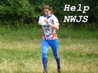
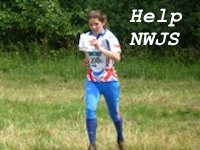
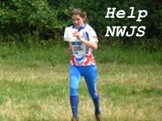

SROC -
Red Rose Orienteers
South Ribble Orienteering Club, England's first, Founded 1964
◪
Home
Photo Gallery
Newcomers
About SROC
Fixtures
Results
Tim Watkins Blodslitet
Links
Join SROC
Next Events
Recent Results
SROC Newsletter
Tweets by SROC_1964
This
Lancaster
weather forecast
is generated by the
Met Office Weather Widget
Blog Posts

 
